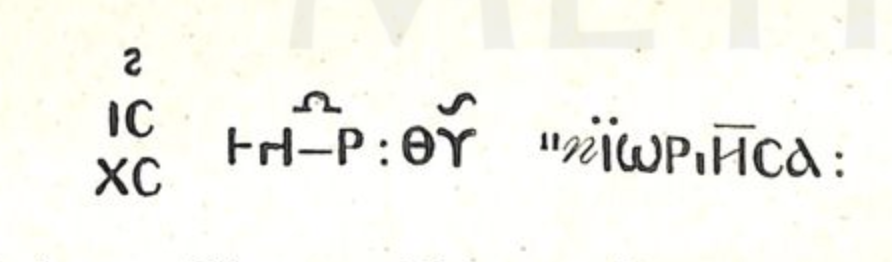

ღვთისმშობლის ხატი
შინაარსი / Summary
მოსახსენებელი
ბიბლიოგრაფია Bibliography
კრიტიკული გამოცემა Interpretive Edition
Μιχ(αήλ) Γαβριήλ Ἰ(ησοῦ)ς Χ(ριστό)ς ἡ ἁγι ο ωρ εί τ ι ησσα μ(ήτ)ηρ θ(εο)ῦ
დიპლომატიური გამოცემა Diplomatic Edition
ΜΙΧ ΓΑΒΡΙΗΛ ΙΣ ΧΣ Η ΑΓΙ Ο ΩΡ ΕΙ Τ Ι ΗΣΣΑ ΜΗΡ ΘΥ

Silver cross from Doli
{'ka': 'მთაწმინდელი, დედა ღვთისა'}
{'default': 'ღვთისმშობლის ეპითეტი - მთაწმინდელი, მთაწმინდისა - არაა საყოველთაოდ გავრცელებული. დათარიღება ხდება წარწერის ენობრივი და პალეოგრაფიული თავისებურებების, ხატის ქართული ისტორიული წარწერების (მეფე გიორგი I-ისა და დავით ხამბაშის ძე\n ჭყონდიდელი მთავარეპისკოპოსის მოხსენიებით) მიხედვით. ეს წარწერა თინათინ ყაუხჩიშვილს აღებული აქვს პომიალოვსკის კრებულიდან ( 47). ბაქრაძის შრომიდან (Свнетия.. 79, приложение №18) და ს. ყაუხჩიშვილის\n სვანეთის ექსპედიციის დღიურიდან. პომიალოვსკი სარგებლობს ბაქრაძის მიერ გადმოღებული პირით და, ჩანს, მასთან ერთად შენიშნავს: "В последнем слове кроется прозвание\n Богоматери с окончением на ισσα, вроде Πορταΐτισσα", თვით ეს სიტყვაც მოცემული აქვთ ამავე ფორმით πϊωριήσα. ს. ყაუხჩიშვილის დღიურში და 1931 წლის სვანეთის\n ექსპედიციის მიერ გადაღებულ ფოტოსურათზე გარკვევით იკითხება ΑΓϊωΡΙΤΗCΑ. მთავარანგელოზის გამოსახულებები შესატყვისი წარწერებით მხოლოდ ს. ყაუხჩიშვილის\n დღიურში არის მოხსენებული. ყურადღებას იპყრობს ფორმა αγϊωρϊτησα - ბერძნულ ლექსიკონში დადასტურებულია ფორმა ὁ ἁγιορείτης (δημ. μοναχὸς τοῦ Ἁγίου Ὄρους), შესაძლებელია მდედრობითისათვის\n წარმოებულია აქედან ἁγιορείτισσα (Πορταΐτισσα-ს ანალოგიით).'}
<div type="edition" xml:lang="ka" ana="mtavruli" xml:space="preserve">
<ab>
<lb n="1"/><w lemma="ქრისტე"><expan><abbr>ქ</abbr><ex>რისტ</ex><abbr>ე</abbr></expan></w>
<w lemma="განსუენება"><expan><abbr>გა</abbr><ex>ნ</ex><abbr>ო</abbr><ex>ჳ</ex><abbr>ს</abbr><ex>უ</ex><abbr>ენე</abbr></expan></w>
<w lemma="სულ">სოჳ<lb n="2" break="no"/>ლსა</w>
<name nymRef="ვაჩა">ვაჩაჲს<lb n="3" break="no"/>ასა</name>
<name nymRef="გურა"><expan><abbr>გო</abbr><ex>ჳ</ex><abbr>რაჲ<lb n="4" break="no"/>სასა</abbr></expan></name>
<name nymRef="მირა"><expan><abbr>მ</abbr><ex>ი</ex><abbr>რა</abbr><ex>ჲ</ex><abbr>ს</abbr><ex>ა</ex><abbr>ს</abbr><ex>ა</ex></expan></name>
</ab>
</div>